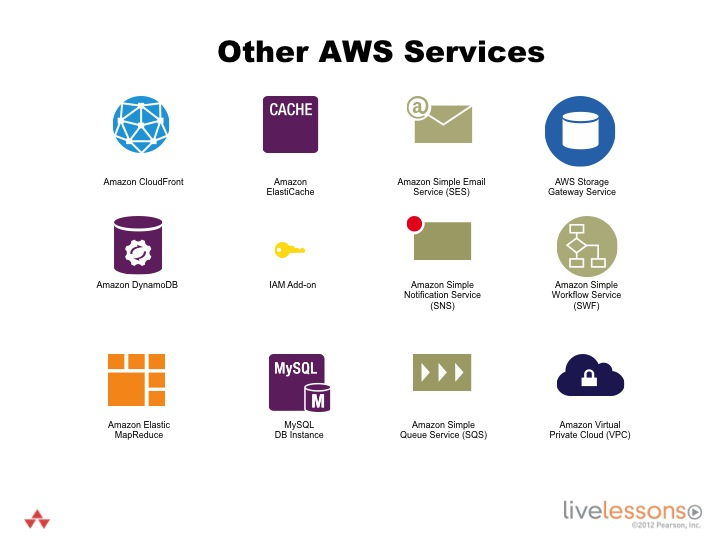

           <div class="container-fluid">
                <div class="row">
                    <div class="col-lg-12 col-xs-12">
                    <!-- Main Body Content -->
                    <h2 class="page-title bg-primary">3.11 - Other AWS Services</h2>
                   <!-- inner body -->
                <div class="inner-body panel">
                    <h4 class="sub-heading">Learning Objectives</h4>
                    <p>By the end of this lesson you will be able to -</p>
                    <ul class="edited-ul">
                        <li>Become familiar with other AWS services that won't be the focus of this LiveLesson.</li>
                    </ul>
                       </div>  
                     </div>
                     </div>
                 </div>
                <!-- inner body ends here -->
                 <!-- container-fluid start here -->
                <div class="container-fluid">        
                    <div class="row">
                        <div class="col-xs-12 col-md-12">
                            <h4 class="bg-info secondary-header">The basics of some other available AWS service</h4>           
                        <div class="text-center">
                            
                        </div>
                        </div>
                </div>
            </div>
            <!-- container-fluid ends here -->
                <!-- container-fluid start here -->
                <div class="container-fluid">        
                    <div class="row">
                        <div class="col-xs-12 col-md-12">
                         <h4 class="bg-info secondary-header">Explore other AWS Services</h4> 
                            <div class="inner-body panel">
                            <p>Explore other AWS Services.</p>
                            <ul class="ul-listed">
                                   <li>From the AWS Management Console, select the CloudFront tab at <a href="https://console.aws.amazon.com/cloudfront/" target="_blank">https://console.aws.amazon.com/cloudfront/</a>.</li>
	                               <li>From the AWS Management Console, select the DynamoDB tab at <a href="https://console.aws.amazon.com/dynamodb/" target="_blank">https://console.aws.amazon.com/dynamodb/</a>.</li>
                                   <li>From the AWS Management Console, select the Elastic MapReduce tab at <a href="https://console.aws.amazon.com/elasticmapreduce/" target="_blank">https://console.aws.amazon.com/elasticmapreduce/</a>.</li>
                                   <li>From the AWS Management Console, select the Elasticache tab at <a href="https://console.aws.amazon.com/elasticache/" target="_blank">https://console.aws.amazon.com/elasticache/</a>.</li>
                                   <li>From the AWS Management Console, select the IAM tab at <a href="https://console.aws.amazon.com/iam/" target="_blank">https://console.aws.amazon.com/iam/</a>.</li>
                                   <li>From the AWS Management Console, select the RDS tab at <a href="https://console.aws.amazon.com/rds/" target="_blank">https://console.aws.amazon.com/rds/</a>.</li>
                                   <li>From the AWS Management Console, select the SES tab at <a href="https://console.aws.amazon.com/ses/" target="_blank">https://console.aws.amazon.com/ses/</a>.</li>
                                   <li>From the AWS Management Console, select the SNS tab at <a href="https://console.aws.amazon.com/sns/" target="_blank">https://console.aws.amazon.com/sns/</a>.</li>
                                   <li>From the AWS Management Console, select the SQS tab at <a href="https://console.aws.amazon.com/sqs/" target="_blank">https://console.aws.amazon.com/sqs/</a>.</li>
                                   <li>From the AWS Management Console, select the Storage Gateway tab at <a href="https://console.aws.amazon.com/storagegateway/" target="_blank">https://console.aws.amazon.com/storagegateway/</a>.</li>
                                   <li>From the AWS Management Console, select the SWF tab at <a href="https://console.aws.amazon.com/swf/" target="_blank">https://console.aws.amazon.com/swf/</a>.</li>
                                   <li>From the AWS Management Console, select the VPC tab at <a href="https://console.aws.amazon.com/vpc/" target="_blank">https://console.aws.amazon.com/vpc/</a>.</li>
                                </ul>
                            </div>
                        </div>
               		 </div>
            <!-- container-fluid ends here --> </div>  
       </div><!--  main div box close here--> 
    </div> <!-- Page Content Wrapper-->
<!-- /#wrapper -->